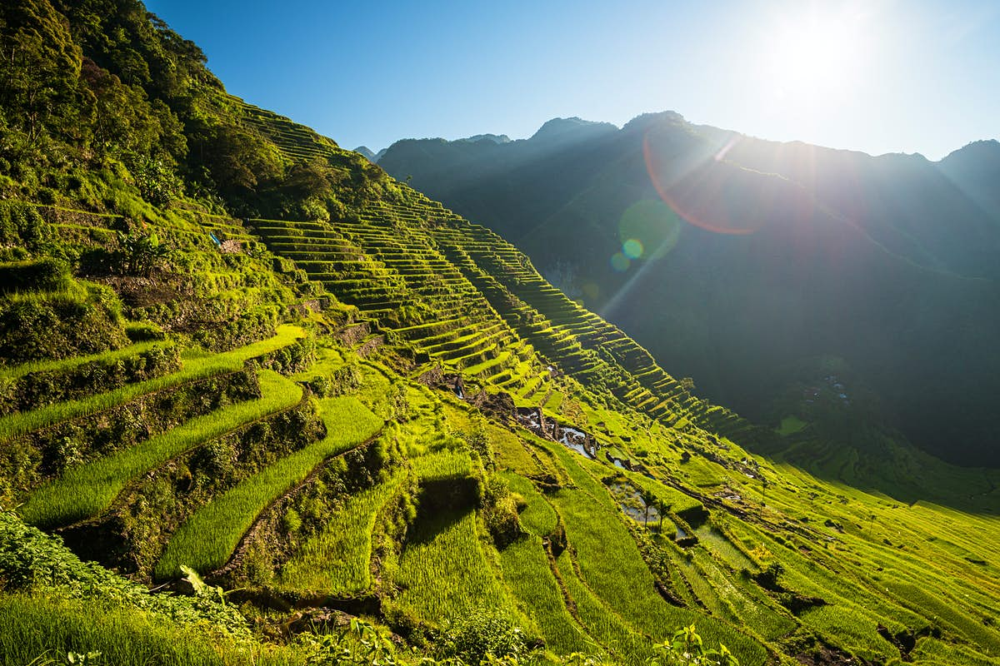

Banaue Rice Terraces
 This tour is ideal if you only have a short time frame but don’t want to miss the Famous Rice Terraces – stunning 2,000 -year – old carved into the mountains of Ifugao by ancestors of the indigenous people. On the first day after we pick you up at Cauayan airport, we drive in 3-4 hours to Native Village Inn in Hapao for lunch. After lunch, we will do the Hapao rice terraces tour, which is a 3 hours easy walk while the guide will explain everything about the local life and planting rice. Optional at the end of the trail is to jump in the hot spring and/or river. After the tours, we go back to Banaue for your overnight stay. The next day we drive in 1 hour to Batad drop off point and then it’s a 20 minutes trek to Batad viewpoint. From there you may choose for an easy trail of 1 hour or 2 hours trek to the village tour and 3 hours if you proceed to the Tappiya falls (very strenuous). A guide from Batad will be guiding the way. You will be rewarded with spectacular views. Then lunch at Batad viewpoint then off (1-hour drive) to Mayoyao. Here we will have our mayoyao tour of 1-2 hours easy walking through the village and rice terraces. Each village in Ifugao has its own traditions and language.
latest 4 pm we are leaving Mayoyao and then it’s 2.5 hours drive to Cauayan for your overnight stay.
Vigan
Vigan is a historical place. Just walking around the cobblestone streets around Calle Crisologo, or even better, taking a ride in a horse drawn carriage will take you back to the Spanish era of the Philippines. When strolling around you’re sure to pass through Plaza Burgos and Plaza Salcedo. There you can find the dancing fountains (a must see at night), and St Paul Cathedral. A nice short walk outside of town will take you to the beautiful Bantay Church. The church’s ancient bell tower, used as a watch tower during the Spanish era, is one of the most alluring sights around. Other attractions that are not historical themed are also available. You can hit Moindoro Beach, a rare black sand beach in the outskirts of town. Baluarte is a zoo of free roaming, non-carnivore animals that is also free of charge. If you are in tow for a while it is sure a fun activity.
Batanes

Batanes is the northernmost province of the Philippines, it’s even nearer to Taiwan than Luzon! It’s also the smallest province in the country in terms of land area and population. But in spite of its location and size, this dreamy destination has been enchanting both local and foreign tourists with its unique natural attractions, traditional architecture, and well-preserved culture. Be captivated with natural sceneries and cultural experiences at North and South of Batan island. Feeling brave? Go big riding the frenzy waves to Sabtang or Itbayat while in a faluwa. Experience a different kind of road trip while biking around Basco’s hilly terrains. Treat yourself with some Ivatan delicacies such as Lunyis, the local version of Adobo, and Dibang, or flyish fish. And don’t forget to give your warmest smile to the friendly Ivatans.